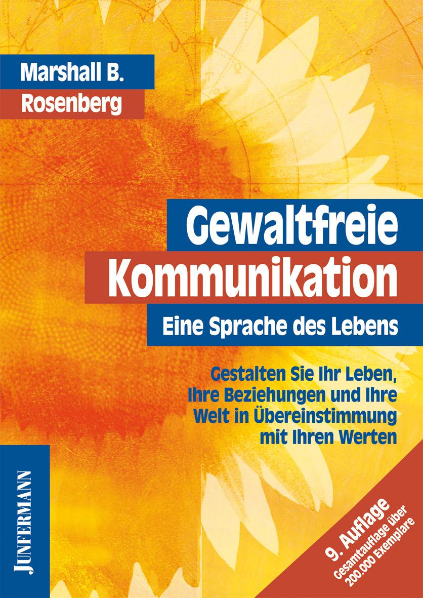

Rosenberg, a clinical psychologist, spent his life asking why some people stay compassionate under the worst conditions while others turn violent, and found much of the answer in language. The result is a deceptively simple process of four steps, which he taught in schools, prisons, hospitals, companies and conflict zones, from gang neighbourhoods to a refugee camp near Bethlehem. Rosenberg insists it is not a formula: it is a way of paying attention, and it works even when the other person has never heard of it.
The whole method on one card
Every NVC exchange uses the same four components. You can use them to express yourself honestly (without blaming or criticising) or to receive the other person empathically (without hearing blame or criticism), whatever words they choose.
His own example: a mother says to her teenage son, "Felix, when I see two balled-up dirty socks under the coffee table and three more next to the TV, I feel irritated, because I need more order in the rooms we share. Would you be willing to put your socks in your room or in the washing machine?"
The book's image for the two languages: the giraffe (the land animal with the largest heart, and a long neck to see far) and the jackal, which speaks in judgements. Students in his workshops use the shorthand "Say it in giraffe."
In a mosque in the Deheisha refugee camp near Bethlehem, a man stood up and shouted "Murderer!" because Rosenberg was American. Instead of defending himself, Rosenberg guessed at the man's feelings and needs: "Are you angry because you'd like my government to use its resources differently?" He neither agreed nor argued, and listened like this for about twenty minutes. By the end the man invited him home for the Ramadan meal. The guess didn't have to be right; the sincere effort to understand was what counted.
Chapter 2
Rosenberg calls it lebensentfremdend, "life-alienating": habits of speech we learned so early that we don't notice them.
Step 1 · Chapter 3
You don't have to stay perfectly objective. You just have to keep observation and evaluation apart, because the moment they mix, the other person hears criticism and stops listening. Krishnamurti called observing without evaluating the highest form of human intelligence. Rosenberg lists seven ways we blur the two:
"Always" and "never" are the classic case: they invite a defence of the exceptions instead of a conversation. Try it yourself:
Step 2 · Chapter 4
Most of us know more words for judging people than for describing what goes on inside us ("big boys don't cry"). The trap is the phrase "I feel that…", or "I feel like…", "I feel as if…": what follows is a thought. A woman told Rosenberg, "I feel like I'm married to a wall." What she felt was lonely, and she wanted more emotional contact; the wall sentence was a criticism that would only make her husband more wall-like.
Vulnerability works. A hospital administrator who admitted his anxiety to the doctors turned a 17–1 vote against his project into 17–1 in favour. And when Rosenberg once hid his nervousness in a classroom, the students read it as distaste for being with Black students; when he admitted "I'm very nervous, I don't know anyone here and wanted to be accepted," the room opened up.
These describe what you think others did to you. Look underneath: "ignored" usually hides sad, hurt or lonely.
The same goes for self-judgements: "I feel inadequate as a guitarist" is an evaluation. "I'm disappointed / impatient / frustrated with myself" is a feeling. "Good" and "bad" are too vague to tell anyone anything.
Step 3 · Chapter 5
What others do may be the stimulus of our feelings, but never the cause.
Feelings come from our own needs and expectations. So "You disappointed me by not coming" becomes "I was disappointed when you didn't come, because I wanted to talk through some things that are worrying me." The formula: "I feel … because I need / it matters to me that …". Watch for guilt-tripping disguises: "it makes me…", "Mum and Dad are sad when you get bad marks," "…because you…".
Someone says: "You're the most selfish person I know!"
"You never understand me" = I need understanding. "You love your work more than me" = I want closeness. In mediations Rosenberg simply asks two questions: What do you need? What would you like to ask for? Universal needs he lists include autonomy, celebration and mourning, integrity and meaning, acceptance, appreciation, closeness, community, consideration, contributing, emotional safety, empathy, honesty, love, respect, support, trust, understanding, play, peace, beauty and order.
"I'm angry because I have to be home before the kids" names a strategy. The need is "because I want the children to be able to get into the house after school." Rosenberg's own mother spent 36 years resenting his father without ever saying clearly what she needed. If we don't take our needs seriously, he warns, no one else will.
Step 4 · Chapter 6
You can tell by how the speaker reacts to "no." If "no" brings criticism ("typical, so selfish") or guilt ("if you loved me…"), it was a demand. A real request hears the no with empathy: "Are you exhausted and need rest?" Words that signal demand-thinking: should, must, ought, deserve, entitled, have a right to. His son Brett only started taking out the rubbish once Rosenberg's reasons, not his authority, came through.
Build your own
Pick a situation, then adjust each step. The pattern from the book's appendix: "When I see / hear … I feel … because I need / value … Would you be willing to …?"
The jackal version would be:
Chapters 7–8
Don't just do something. Be there.
When his daughter said she looked "ugly as a pig," Rosenberg assured her she was the most wonderful creature; she slammed the door. What she needed was: "Are you disappointed with how you look today?" Before advice or comfort, check whether that's wanted. The usual reflexes, from a list by Holley Humphrey, all block empathy:
When a friend said "You never listen anyway," the empathic reply isn't "Are you unhappy with me?" (about me) or "…because you feel I don't understand you?" (a thought). It's "Are you unhappy because you'd like to be heard?": listen for their need, not for what they think of you. Phrase guesses as questions, without a trace of irony. An elderly patient kept saying "I want to die"; the nurses advised and reassured. A volunteer simply said, "So you'd like to die." The woman relaxed, talked, and started eating again.
Empathy even defuses danger. A teacher in St. Louis, threatened at knifepoint, kept naming the man's feelings and her own fear, and he left with only her purse. A ten-year-old, Isabelle, told her furious mother: "You're really angry, Mum. You'd like him to say something when he's upset instead of walking away." Her mother calmed down.
Chapters 9–10
After a mistake our inner voice says "How stupid!" Rosenberg suggests mourning instead: "Which unmet need is this judgement expressing?" Then self-forgiveness: "Which need was I trying to meet when I did it?" When a felt-tip pen without a cap ruined his suit, he spent twenty minutes calling himself thoughtless before finding the two needs: to take care of himself, and to be there for the person he'd been focused on.
Wanting to kill someone, he says, doesn't go far enough: anger should be expressed completely, not swallowed. Its cause is never the other person but our blaming thoughts. A prisoner in Sweden was furious that the authorities hadn't answered his application for three weeks. Once he connected with his need (an education, so he wouldn't end up back inside) the anger turned into fear. Three hours later he said that if he had learned this two years earlier, he wouldn't have killed his best friend.
Chapters 11–13
His son once asked him, "Do you notice how often you mention what went wrong and how rarely what went right?" Rosenberg wrote a song about remembering the 2% you got wrong. And when his Uncle Julius, who had lovingly nursed Rosenberg's paralysed grandmother, was dying, Rosenberg overcame "he knows anyway" and thanked him. Julius had the poem read to him every day until he died three weeks later.
The book ends with that grandmother, who once took in a homeless man calling himself Jesus. He stayed seven years. She never asked what he was, only what he felt and needed.
Pocket version